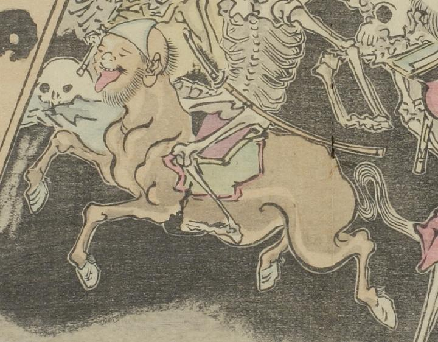

三角頭巾をかぶった幽霊馬。青い頭巾をかぶり、大きな舌を出している。茶色の体をしており、顎ひげを生やしている。
出典：親書誌：U426_nichibunken_0093：暁斎百鬼画談；ギョウサイヒャッキガダン／日付：2006／資源識別子：U426_nichibunken_0093_0001_0006
Copyright (c)2010- International Research Center for Japanese Studies, Kyoto, Japan. All rights reserved.